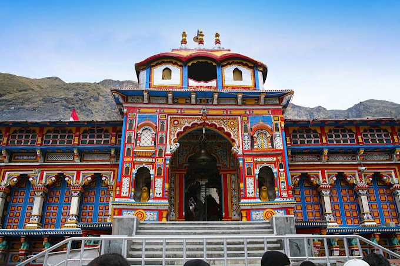

Shree Badrinath Temple
Shree Badrinath Temple, located in the town of Badrinath in Uttarakhand, India, is one of the holiest Hindu temples dedicated to Lord Vishnu. Positioned at an altitude of 3,133 meters (10,279 feet) in the Garhwal Himalayas, the temple is part of the Char Dham and Chota Char Dham pilgrimage circuits, attracting thousands of devotees each year. The temple's origins are ancient, with references dating back to Vedic scriptures, and it is believed to have been established by Adi Shankaracharya in the 8th century.
The temple's architecture is distinctive, featuring a colorful facade with intricate carvings and a gold-gilt roof. The main deity, Lord Badrinarayan, is enshrined in a black stone idol, depicting him in a meditative pose. This statue is surrounded by images of other deities and saints, including Nar and Narayan. The temple complex also includes a Tapt Kund, a hot spring considered sacred by pilgrims who bathe in its waters before entering the shrine for darshan.
The journey to Shree Badrinath Temple is an integral part of the pilgrimage experience. Pilgrims travel through the scenic landscapes of the Himalayas, crossing rivers, forests, and mountains to reach the temple. The town of Badrinath is accessible by road, and during the pilgrimage season, it is bustling with activity as devotees and tourists arrive to offer their prayers and seek blessings. The temple is open for six months a year, from April to November, due to harsh winter conditions.
Shree Badrinath Temple holds great spiritual significance for Hindus. According to legend, Lord Vishnu meditated here for thousands of years, and the area around the temple is said to be filled with spiritual energy. The temple's rituals and festivals, including the annual Badri-Kedar festival, draw large crowds and are marked by devotional music, dance, and prayers. Visiting Shree Badrinath Temple provides a profound spiritual experience, combining devotion with the natural beauty of the Himalayan region, making it a revered destination for pilgrims and travelers alike.